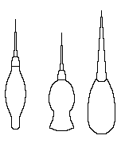
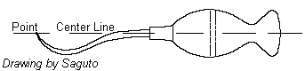
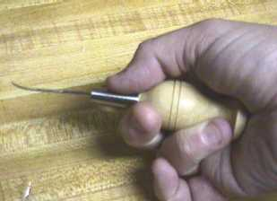
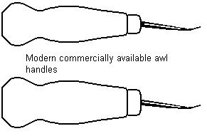
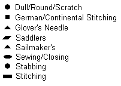
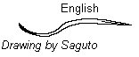
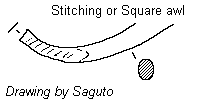
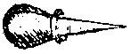
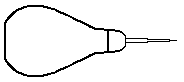

Glossary of Footwear Terminology, A
Acrylonitrile
A tough rigid plastic. Used for making plastic heels.
[www.shoeworld.co.uk/shoeworld/help/glossary.html; www.cityintl.com/footwear/]Addition method
A method of fitting up the custom-made last. If the foot is broader, the instep or big toe
higher, or the heel thicker than the average, the shoemaker corrects the last by attaching
various pieces of leather to it. Though the shoemaker can use this corrected last to make
the shoe, it is advisable to produce a definitive last by fine copying it. [Vass]
Adduction
The movement of your foot toward the midline of your body during supination
[www.skibootspecialist.com]
Aglet
(Other medieval spellings include Agglette, Agglot, Aigulet, Esguylettes.
Latin: Aeus, Actdus, Acula. Modern and traditional terms include: Tag, Aigulet
and Lace End)
A binding around the end of a lace to protect it, reinforce it and help thread
it through holes. Although they are not commonly found, medieval boot and shoe
aglets seem to have been coiled brass wire, while those for clothing were
wrapped metal sheets. In some forms of medieval boot and shoe lacing only a
single end might need an aglet, while the other end was just knotted or stitched
inside the shoe or boot. Aglets were used on some leather laces, and if they
were used on cloth laces these have not survived.
See also Tag
Alishin
See Awl. Term used in northern counties and/Scotland [Salaman]Allutarii
An Anglo-Norman term,
from the Latin, for a shoemaker, and refers to them as people who work with alum
tawed leather.
Anchor chape
Attachment device for detachable buckles with a spiked tongue and an extension with
two prongs that resemble the shape of a ship's anchor; the two prongs are slipped into a
slot on the medial quarter top front. [Goubitz, 2001]Aniline leather
Leather finished with an aniline dye, which gives a natural look.
[www.shoeworld.co.uk/shoeworld/help/glossary.html; www.cityintl.com/footwear/]
Ankle boots
See Ankle shoeAnkle shoe
- An item of footwear, and a subset of "boot", where the top is approximately on
the ankle joint, or extends just above the ankle. [Grew/deNeergaard, 1988]
- Shoe with uppers that reach just to or over the ankle [Goubitz, 2001]
Ankle straps
A strap, usually fastening with button or buckle, that goes around the ankle.
[Thornton/Swann, 1983]
Ankylosis
Destruction of a joint, resulting in a total loss of movement [www.skibootspecialist.com]
Anterior
To the front of the body [www.skibootspecialist.com]Anti-static
A shoe with metal plug in sole to ensure static electricity is safely earthed to avoid
sparks in areas where flammable gases are present or sudden electrical discharge could
cause damage. [www.shoeworld.co.uk/shoeworld/help/glossary.html;
www.cityintl.com/footwear/]
Antique finish
An upper that is finished to give an impression of age by overspraying selected areas with
a darker, contrasting finish. [www.shoeworld.co.uk/shoeworld/help/glossary.html;
www.cityintl.com/footwear/]Anvil
(See Last, Repair)
Anvil Last
(See Last, Repair)Apron (Apron Front)
- A long leather apron, used to protect the garments, and to run the thread along when
winding and unwinding.
- A shoe front having a shield-shaped "apron" on top, either underlying or
overlaying the remainder of the vamp. It derives from the moccasin (q.v.) where it
sometimes forms the top part of the upper after the pleats have been removed.
[Thornton/Swann, 1983]
- An oval or shield shaped section on the forepart of the foot. It may extend nearly to
the end of the toe, or be set well back on the instep. The apron may extend to become a
tongue. The apron may be an overlay, underlay, or an insert. Anthropologists in North
America usually use the term vamp for apron. [Webber, 1989]
- A vamp made up of flat apron laid over side of forepart.
[www.shoeworld.co.uk/shoeworld/help/glossary.html;
www.cityintl.com/footwear/]
Apron Front
(see Apron)
Arch
- Technically the foot has
at least four arches, although there are two major arches, the longitudinal
arch, which extends along the length of the foot on the medial or inner side,
under the instep from the joint to the heel; and the metatarsal arch, formed by
the natural arching of the metatarsals at the joints of the foot.
- The curved inside part of the foot, where the bones form a bridge from heel to ball.
[Thornton/Swann, 1983]
- The curved shape of the inner or medial side of the foot formed by the span between the
heel and the joint [Goubitz, 2001]
- The foot has a natural arch on the inside, formed between the calaneum base and the
beginning of the metatarsal joint. This is known as the longitudinal arch, and is usually
the one referred to. There is another arch, the metatarsal arch, formed by the natural
arching of the base of the metatarsals. [Webber, 1989]
- The upward curve at the side of the foot. Sometimes known as the longitudinal arch. Some
authorities claim four different arches for the foot. [Frommer]
- The bow-like upward curve on the bottom of your midfoot [www.skibootspecialist.com]
- The part of plantar that does not touch the ground. Most commonly used of metatarsal
arch. [www.shoeworld.co.uk/shoeworld/help/glossary.html; www.cityintl.com/footwear/]
Arch support
- (Shank) A piece of material (stiff leather) to strengthen the part of the sole under the
arch of the foot [Goubitz, 2001] [later Shanks are of wood or metal]
- An area of insole that has been built up and strengthened to support metatarsal arch, or
similar support which can be inserted in the shoe separately.
[www.shoeworld.co.uk/shoeworld/help/glossary.html; www.cityintl.com/footwear/]
- At an early stage, fallen arches can be counteracted with supports. This is why it is
important for the shoemaker to form a precise idea of the state of the arches.
[Vass]
Awl (Al, Alesne, Alishin,
Alle, Bodkin, Bodkyne. Elshin, Elson, Elsyn Latin:
Sibula Subula)
-
A family of tools used to pierce holes in leather or fabric (see Hole). Elson
and awl are both used for the cordwainer�s awl.
- Medieval Awls:
The first four in this lineup are based on illustrations. The first and
third appear in varying forms in Das Hausbuch der Mendelschen, (Stadtbibliothek
N�rnberg).
The Second is from an altarpiece from Fribourg, "Two scenes with Saints Crispinus and
Crispinianus" - by the Bernese Master of the Pinks ("of the Carnations")
(1500-1510) (Schweizerisches Landesmuseum, Zurich).
The Fourth is from "Life of St. Mark", 14th century. (Manresa Cathedral,
Spain)


The remaining line up show several awls from archaeological contexts. The first
three are from the Museum of London, although I don't have the excavation information.
The next two are from Greenland -- Sandnes S.167 (metal awl - D11709 7.6 long. In House I)
c.1350 Western Settlement and Sandnes S.168 (metal awl - D11710 8 Long (blade is 4.4),
Collar. In Stable 5V) c.1350 Western Settlement. The next two are from Poland.

- An Awl is a tool designed to poke a hole in some form of fabric, be it textile, leather,
or what have you, and then to spread that hole wider without actually cutting the fabric,
since that would weaken the structure of the fabric. The cross-section of the Awl must be
less than the diameter of the thread in order to achieve a water-tight grip. Some awls are
"S" shaped, because it is felt that this gives the person using the awl better
control of the hole.
By the 18th century, the traditional awl looked like:

The point being set at the centerline has been shown through experimentation to improve
the control of the entry. The short length of the handle allows for a more of the hand
strength to be placed behind the awl. There have been a number of examples of these that
have been found in archaelogical sites, both in Europe and North America. A number
of members of the Honorable Company of Cordwainers have done extensive experimentation
with reproductions of these awls.

Repro by Dick Anderson
- A pointed instrument usually composed of two parts -- a blade and a handle (also known
as a haft). Used for making or piercing a hole in leather. Examples--inseaming awl, sewing
awl, clickers (or clicking) awl, pegging awl and hooked awl. [Frommer]
- A hand tool consisting of a blade and handle, used to pierce holes in leather for sewing
and stitching [Goubitz, 2001]
- The shoemaker uses a long awl to make holes in the welt for
the stitches and a short one to make the holes for the wooden pegs in the rand. [Vass]
- Forms of Awls


- Dull/Scratching Awl/Round Awl
A straight blade, round cross section, and a blunted tip. This is not intended to
punch a hole in the leather, and therefore should not be sharp. It is meant to mark the
leather, or, perhaps, to widen a previously made hole.
- Stabbing Awl
A straight blade, round cross section, and as sharp a tip as possible. This is used
for stabbing stitching holes from one side of the leather to the other. Based on
illustratins and archaeological finds, we may assume that medieval awls were most likely
stabbing awls.

A 19th century style of stabbing awl.
- Closing Awl
A curved or bent balde with a flat oval cross section - smaller than a sewing awl.
It is useful for sewing a split hold needed for closing. There is some
disagreement when these were developed. It is definately safe to assume these were
used by the 1600s
- Sewing Awl
A curved or bent balde with a flat oval cross section. There is some disagreement
when these were developed. It is definately safe to assume these were used by the
1600s

- Stitching Awl
A flat rectangular cross section. You may have to sharpen the point, but there is no
need to sharpen the edges, as the blade is designed to spread open the hole for taking the
thread, not for cutting the leather.

This style is not seen before c.1650
Holme, writing in the 1600s shows a stitching awl as:
 And this may refer to what we
are calling here a stabbing awl.
And this may refer to what we
are calling here a stabbing awl.
- Pegging Awl:
Holme shows this post Medieval tool as:

This is used for making
holes for inserting Pegs (qv). This is also a post-Medieval style of tool, as pegging
doesn't appear to have become a common practice until the late 16th century.
A more modern version is

- Sailmakers Awl
A Triangular cross section. Not used for medieval leatherworking, and shown here
simply for the sake of identification.
- Saddler's Awl
A diamond cross section. This is a commonly used form of awl in modern leatherworking, and
there is some evidence that it was also quite common throughout the Middle Ages as well.
- Stabbing Awl
A straight blade, round cross section, and as sharp a tip as possible. This is used
for stabbing stitching holes from one side of the leather to the other.
- Pricking Awl
I suspect that this is a term for any awl that is used for making holes to stitch with,
and should not be confused with the other "pricking" tools of leatherworking and
shoemaking (the Pricking Iron and Pricking wheel).
Awl holes
- Square holes made with the awl for the wooden pegs used to
attach the rand. The holes are eventually sealed with adhesive. [Vass]
- A small opening in the leather made by the awl blade; in archaeological leather it is
seen where the awl entered and exited the surface of the leather. [Goubitz, 2001]
Return to Contents or [Next]
Footwear of the Middle Ages - Glossary of Footwear Terminology A, Copyright �
1999, 2000, 2001, 2005 I. Marc Carlson.
This page is given for the free exchange of information, provided the author's name is
included in all future revisions, and no money change hands, other than as expressed in
the Copyright Page.